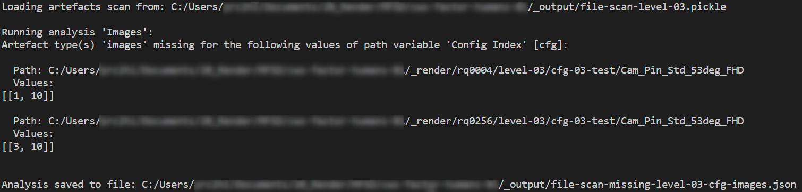

Production Analysis#
When rendering a large number of configurations, it is not uncommon that some could not be rendered, be it due to the job crashing, some missing assets or a bug. It can be quite difficult and time consuming to figure out, whether all the data you wanted to produce is actually available. To simplify this task, there are two cathy commands available:
cathy prod scan -c [configuration name] -p [production configuration file]cathy prod analyze -c [configuration name] -p [production analysis configuration file]
The first command is simply scanning the file system following a path structure specified in a configuration file (see below). The second command analyses this scan with respect to various aspects that are defined in an analysis configuration file. The idea of splitting this process into two steps is, that you only have to scan the file systems once but can do various analysis runs on this scan.
In the following the two configuration files needed are discussed.
Production Configuration#
The production configuration is typically specified in the file production.json that is stored next to your launch.json file. (This is also the default file used by the gui image viewer, that can be started with cathy gui ws.) However, you can have multiple production files and name them differently. The basic idea here is, that you define a path search pattern, where the resultant ‘artefacts’ (images, data files, etc.) of running the Catharsys configuration can be found. To explain the details, consider the following folder tree of some render results as seen on the right:
{kind=link}
We want to search for the rendered images together with the depth and label images that are located in the opened folders on the right. The pattern we define is split into two parts:
A group path, that specifies everything down to the folder where the artefact folders start. In this case, one such path is
_render/rq0256/level-03/cfg-03-test/Cam_Pin_Std_53deg_FHD/1.A set of artefact paths that describe the sub-paths that lead to the result data of the different artefacts. For example, one result image is located in the sub-path
Image/Frame_0001.png, while the corresponding label preview image is underAT_Label/full_res/Preview/Frame_0001.png.
The path patterns can be defined as a combination of fixed path elements, pre-defined variable path elements and user defined, variable path elements. For this example, the path structure pattern looks like this:
!production/!rq/!project/cfg-03-test/?camera/?cfg
All elements starting with a ‘!’ are pre-defined variables, while elements starting with ‘?’ are user defined variables. Elements starting with neither are fixed path elements. The meaning of the variables is as follows:
!production: this is replaced by the main production path for this workspace. It’s the absolute path including the_renderfolder, for example,/data/renders/example/_renderif your workspace folder is/data/renders/example.!rq: the render quality folder, which must be of the formrq[xxxx], wherexxxxstands for the render quality value.!project: the current project (confguration) folder. In this example,level-03.?camera: this is any folder, used as a result dimensioncamera. In this example,Cam_Pin_Std_53deg_FHD.?cfg: this is any folder, used as a result dimensioncfg. In this example,1.
The actual artefacts that a scan looks for, are specified with separate path structure patterns, one for each artefact you want to find. For example, the artefacts in this example are specified with the following patterns:
Images:
Image/!frameDepth:
AT_Depth/full_res/Preview/!frameLabel:
AT_Label/full_res/Preview/!frame
The pre-defined variable !frame stands for any file with the name pattern Frame_[number].[suffix].
Here is an example production.json:
{
"sDTI": "/catharsys/production:1.0",
"mGroups": {
"cfg3": {
"sName": "Config 3",
"sPathStructure": "!production/!rq/!project/cfg-03-test/?camera/?cfg",
"mVars": {
"cfg-type": {
"sName": "Config Type",
},
"camera": {
"sName": "Camera",
},
"cfg": {
"sName": "Config Index",
},
},
"mArtefacts": {
"images": {
"sDTI": "/catharsys/production/artefact/image/png:1.0",
"sName": "Image",
"sPathStructure": "Image/!frame",
},
"label": {
"sDTI": "/catharsys/production/artefact/image/png:1.0",
"sName": "Label",
"sPathStructure": "AT_Label/full_res/Preview/!frame",
},
"depth": {
"sDTI": "/catharsys/production/artefact/image/png:1.0",
"sName": "Depth",
"sPathStructure": "AT_Depth/full_res/Preview/!frame",
},
} // end artefacts
}, // end view group
}, // end groups
}
You can specify any number of production groups under the mGroups element.
If this configuration is stored under the filename production.json5 in the configuration folder level-03, you can initiate a scan of the filesystem with:
cathy prod scan -c level-03 -p production
If your production configuration is not in the same folder as the launch file, then you can also pass a relative or absolute path. The result of the scan is stored in a python pickle file in the _output folder of your workspace. You can also specify a different output file path using the command line option -o.
User Variable Details#
Apart from a display name for user variables, you can also specify a regular expression with the element sRegExParseValue. A folder is only accepted as part of a valid path, if it matches the regular expression. For example, if the reglar expression is ^(?!Frame_)(.+), only folders are accepted that do not start with Frame_.
You can also specify a replace regular expression using the element sRegExReplaceValue, which can be used in conjunction with sRegExParseValue, to replace the display value of the variable. For example, with
"sRegExParseValue": "^Frame_(\\d+).png",
"sRegExReplaceValue": "\\1"
only filenames of the type Frame_[number].png are accepted, but only the extracted frame number is displayed in the viewer. A full user variable definition could look like this:
{
"mVars": {
"myframe": {
"sName": "Frame",
"sRegExParseValue": "^Frame_(\\d+).png",
"sRegExReplaceValue": "\\1",
},
},
}
The Production Analysis Configuration#
Currently, you can only analyze the file system scan for missing artefacts w.r.t. a single group path variable. The group path is the path structure specified under sPathStructure for the a group in the production configuration. For example, the variable cfg of the path structure, refers to a configuration index. One typical analysis is to find all those configuration indices for which an artefact is missing. The corresponding analysis configuration looks like this:
{
"sDTI": "/catharsys/production/analyze:1.0",
// specify the production configuration file.
"sPathProdConfig": "production.json5",
// List of analysis tests for missing artefacts
"lAnalyzeMissing": [
{
// The name of this analysis
"sName": "Images",
// The group id of the production configuration we are referring to
"sGroupId": "cfg3",
// The id of the group path variable, for which to report missing artefacts
"sGroupVarId": "cfg",
// The list of artefact ids as defined in the production configuration to look for.
// If this is an empty list, all artefacts specified in the production configuration
// are tested for.
"lArtTypeIds": ["images"],
// The expected values for the variable given in 'sGroupVarId'
// This list can be simply a list of strings or integers specifying the expected elements.
// For integers, a list element inside the list specifies a range.
// For example, [[1,4]] = [1,2,3,4]
"lGroupVarValues": [[1,10]],
// optional, if defined (even as empty dictionary), the missing data
// output is printed to stdout
"mPrint": {
// optional, if true prints ranges of consecutive integer indices
// as list elements with first and last index.
// For example, instead of printing [3,4,5,6] it prints [[3,6]].
// Another example, [3,6,7,8,9] becomes [3,[6,9]].
"bConcise": true,
},
// optional, if defined (even as empty dictionary), the missing data
// output is saved to an automatically generated filename.
"mSave": {
// optional, if this is not specified, an output name is generated automatically.
// "sPath": "${path-workspace}/missing.json",
// optional, how to indent the json output.
// The default is -1, which means no indentation.
// "iIndent": 2,
}
},
],
}
With this configuration the analysis will list all values for the variable cfg in the range 1 to 4, for which either the whole configuration or the image artefact is missing. If this configuration is stored in the file prod-analysis.json5 next to the launch file, the analysis call is,
cathy prod analyze -c level-03 -p prod-analysis
The output of this call could look like this:
The analysis actually found that all expected 10 configurations (as specified in lGroupVarValues) are missing for render quality 4 (rq0004) and configurations 3 to 10 are missing for render quality 256 (rq0256). If you are only interested in one of the render qualities, then replace the !rq variable in the production configuration with the corresponding fixed folder name, e.g. rq0256.
The analysis result is also stored in a json file. You can use this to re-render a set of configuration indices.